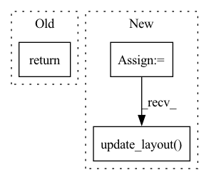

Pattern ID :38091

Before Change
axs[2].axhline(y=0.5, color="k", linestyle="-", linewidth=0.5)
axs[2].axis("off")
return score, "Earth Mover"s Distance", plot_numerical
elif column_type == "categorical":
After Change
is_categorical=True,
max_num_categories=self.max_num_categories)
fig = make_subplots(rows=2, cols=1, vertical_spacing=0.4, shared_yaxes=False, shared_xaxes=False,
row_heights=[0.1, 0.9],
subplot_titles=["Drift Score - " + scorer_name, plot_title])
fig.add_traces(score_bar, rows=[1] * len(score_bar), cols=[1] * len(score_bar))
fig.add_traces(traces, rows=[2] * len(traces), cols=[1] * len(traces))
shared_layout = go.Layout(
xaxis=dict(
showgrid=False,
gridcolor="black",
linecolor="black",
range=[0, bar_stop],
dtick=0.05,
title="drift score"
),
yaxis=dict(
showgrid=False,
showline=False,
showticklabels=False,
zeroline=False,
),
xaxis2=xaxis_layout,
yaxis2=yaxis_layout,
legend=dict(
title="Dataset",
yanchor="top",
y=0.7,
xanchor="left",
x=0.85),
width=700,
height=400
)
fig.update_layout(shared_layout)
return score, scorer_name, fig
def add_condition_drift_score_not_greater_than(self, max_allowed_psi_score: float = 0.2,
In pattern: SUPERPATTERN
Frequency: 3
Non-data size: 3
Instances
Fragment ID: 109188375
Project Name: deepchecks/deepchecks
Commit Name: 292e9b9c82ee947e2d2f26abd035b358b3a996c2
Time: 2021-12-26
Author: 42312361+benisraeldan@users.noreply.github.com
File Name: deepchecks/checks/distribution/train_test_feature_drift.py
M Class Name: TrainTestFeatureDrift
N Class Name: TrainTestFeatureDrift
M Method Name: _calc_drift_per_column(6)
N Method Name: _calc_drift_per_column(6)
M Parent Class: TrainTestBaseCheck
N Parent Class: TrainTestBaseCheck
M File Name: deepchecks/checks/distribution/train_test_feature_drift.py
N File Name: deepchecks/checks/distribution/train_test_feature_drift.py
M Start Line: 185
M End Line: 232
N Start Line: 174
N End Line: 244
'>
Before Change
ax.set_title(f"{scorer_name} (count) by features {feat1}/{feat2}")
value = {"scores": scores, "counts": counts, "feature_1": self.feature_1, "feature_2": self.feature_2}
return CheckResult(value, display=display)
After Change
else:
scores_text[i][j] = f"{score}\n({counts[i, j]})"
fig = ff.create_annotated_heatmap(scores, annotation_text=scores_text,
x=x, y=y, colorscale="rdylgn", font_colors=["black", "black"])
fig.update_layout(title=f"{scorer_name} (count) by features {self.feature_1}/{self.feature_2}",
width=800, height=800)
fig.update_xaxes(title=self.feature_2)
fig.update_yaxes(title=self.feature_1, autorange="reversed")
fig["data"][0]["showscale"] = True
fig["layout"]["xaxis"]["side"] = "bottom"
'>
Fragment ID: 109188378
Project Name: deepchecks/deepchecks
Commit Name: 4dc9f1f9dda03eebb492989b3cff3444b93eaa84
Time: 2021-12-22
Author: jonatan.lib@gmail.com
File Name: deepchecks/checks/performance/segment_performance.py
M Class Name: SegmentPerformance
N Class Name: SegmentPerformance
M Method Name: run(3)
N Method Name: run(3)
M Parent Class: SingleDatasetBaseCheck
N Parent Class: SingleDatasetBaseCheck
M File Name: deepchecks/checks/performance/segment_performance.py
N File Name: deepchecks/checks/performance/segment_performance.py
M Start Line: 157
M End Line: 158
N Start Line: 116
N End Line: 142
'>
Before Change
def display():
sklearn.metrics.ConfusionMatrixDisplay(confusion_matrix).plot()
return CheckResult(confusion_matrix, display=display)
After Change
confusion_matrix = sklearn.metrics.confusion_matrix(ds_y, y_pred)
labels = [str(val) for val in np.unique(ds_y)]
fig = ff.create_annotated_heatmap(confusion_matrix, x=labels, y=labels, colorscale="Viridis")
fig.update_layout(width=600, height=600)
fig.update_xaxes(title="Predicted Value")
fig.update_yaxes(title="True value", autorange="reversed")
fig["data"][0]["showscale"] = True
fig["layout"]["xaxis"]["side"] = "bottom"
'>
Fragment ID: 109188377
Project Name: deepchecks/deepchecks
Commit Name: 4dc9f1f9dda03eebb492989b3cff3444b93eaa84
Time: 2021-12-22
Author: jonatan.lib@gmail.com
File Name: deepchecks/checks/performance/confusion_matrix_report.py
M Class Name: ConfusionMatrixReport
N Class Name: ConfusionMatrixReport
M Method Name: _confusion_matrix_report(3)
N Method Name: _confusion_matrix_report(3)
M Parent Class: SingleDatasetBaseCheck
N Parent Class: SingleDatasetBaseCheck
M File Name: deepchecks/checks/performance/confusion_matrix_report.py
N File Name: deepchecks/checks/performance/confusion_matrix_report.py
M Start Line: 51
M End Line: 56
N Start Line: 50
N End Line: 63